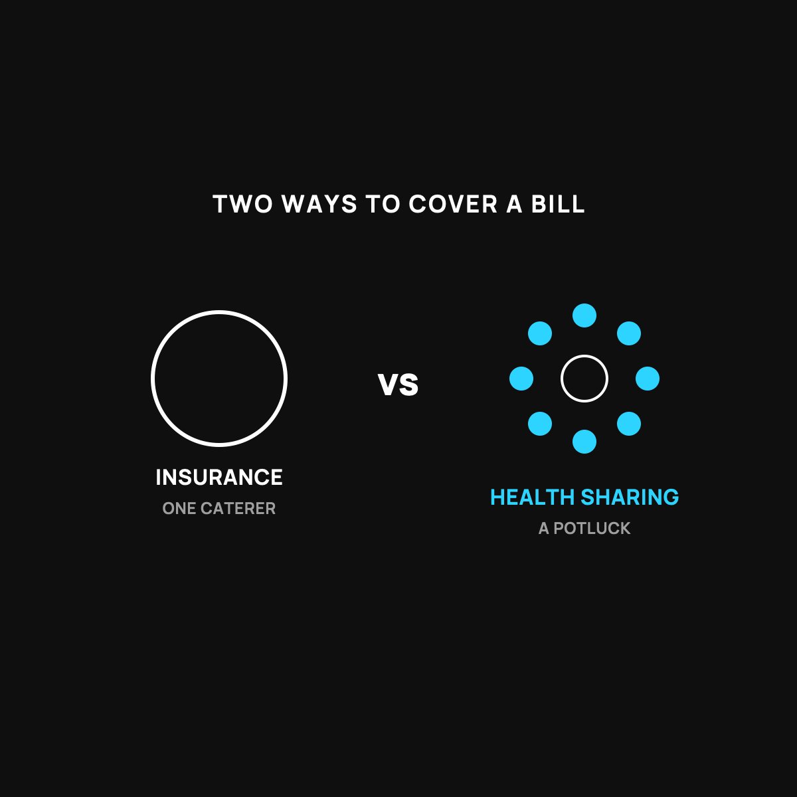

Health Sharing vs. Insurance: The Honest Trade-offs
A potluck vs. a catered dinner. Both feed you. They're different deals.
Insurance is a catered dinner: a legal contract, reliable, regulated, and expensive. Health sharing is a potluck: usually much cheaper, fairer incentives, but a commitment instead of a contract. Insurance fits people who need a guaranteed, broad safety net. Sharing fits healthy families worried about the big surprise bill.

If you've heard about health sharing and wondered whether it's a smart move or too good to be true, this is the honest comparison. No hype, no scare tactics. Just the real trade-offs, laid side by side, so you can decide for yourself.
First, the one-sentence version of each
Insurance is a contract with a company. You pay a monthly bill, and in return the company is legally on the hook to pay covered claims, minus your share.
Health sharing is a big group of people who agree to chip in and cover each other's large medical bills. You pay a monthly amount into the group, and when someone has a big bill, the group's money covers it.
The potluck and the catered dinner
Here's the picture I keep in my head.
Insurance is a catered dinner. You pay the caterer, and they're contractually required to show up with the food. It's reliable and it's regulated. It's also expensive, because you're paying for the company, its profits, and its lawyers, on top of the food.
Health sharing is a neighborhood potluck. Everyone brings a dish, and when one family's in trouble, the table fills up for them. It's cheaper and friendlier, and nobody's skimming a profit off the top. The trade-off is there's no signed contract forcing a specific caterer to show up with your exact favorite dish. It runs on the group's shared commitment, not a legal guarantee.
Neither one is a scam. They're just two different deals.
The honest trade-offs, side by side
Cost: Health sharing is usually a lot cheaper month to month. That's the big draw.
The guarantee: This is the real difference. Insurance is a legal contract. Health sharing is not insurance and does not legally guarantee your bill gets paid. The group has every reason to pay, but it's a commitment, not a contract. You have to be honest with yourself about that.
What's covered: Insurance covers a broad, regulated list. Health sharing communities usually focus on big, unexpected events, and often have rules about pre-existing conditions and waiting periods. It's built for the broken-leg surprise, not the routine stuff.
The incentive: This one favors sharing. Insurance profits when it pays you less, a conflict I dug into. A sharing group has no leftover to keep, so it has no reason to fight your bill.
Who each one fits
Insurance fits people who need a broad, legally guaranteed safety net, especially with ongoing conditions. Health sharing fits healthy people and families who want lower monthly costs, are mostly worried about the big surprise bill, and are comfortable trading the legal guarantee for a lower price and a fairer incentive. I broke down how one real bill gets paid in a sharing group.
If you want to look closer
The sharing community I've looked into most is CrowdHealth. It charges a flat monthly fee and lets the crowd cover big bills. You can see how CrowdHealth model works (opens in a new tab).
Honest disclosure: that's a referral link. If you join through it, Normaltown USA may earn a small referral bonus, at no extra cost to you. I only mention it because it fits the honest comparison above. Health sharing is not insurance, has real limits, and isn't right for everyone.
The takeaway
Insurance is the catered dinner: reliable, regulated, and pricey. Health sharing is the potluck: cheaper, friendlier, fairer incentives, but a commitment instead of a contract. Neither is a scam. The right one depends on your health, your budget, and how much you value a legal guarantee versus a lower bill. Now you can choose with your eyes open.
Questions I get about this
Is health sharing cheaper than insurance?
Usually, a lot cheaper month to month, and that's the big draw. With CrowdHealth it's a flat $60 a month per person plus a modest community contribution, and $500 when you have a health event. No five-figure deductible. Real numbers in What Health Sharing Actually Costs Each Month.
What does insurance cover that health sharing doesn't?
Insurance covers a broad, regulated list. Sharing communities focus on big, unexpected events and have rules about pre-existing conditions and waiting periods. Routine dental, vision, cosmetic work, and expensive ongoing medications usually aren't shared. It's built for the broken-leg surprise, not the routine stuff.
Which one is right for me?
If you need a broad, legally guaranteed safety net, especially with an ongoing condition, insurance. If you're relatively healthy, can keep $500 set aside, want a lower monthly number, and can live with a commitment instead of a contract, sharing is worth pricing. Read Who Health Sharing Is Wrong For first.

Written by David Dewese
Normal guy with a full-time job, wife, and kids. Spent twenty years pursuing music and creative ventures before starting a family. Sharing tips and tricks on how to thrive while living on an artist's income. Not a financial advisor. More about me.
New here?
Normaltown USA is plain-English money and healthcare help for normal people, written by a regular guy with a family of four. No jargon, no hype. Start here, or read the FAQ.